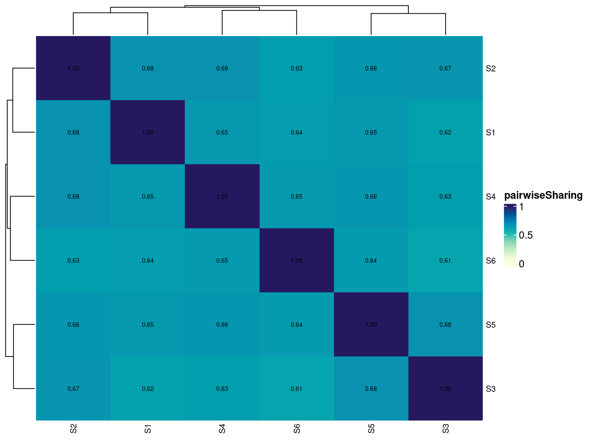
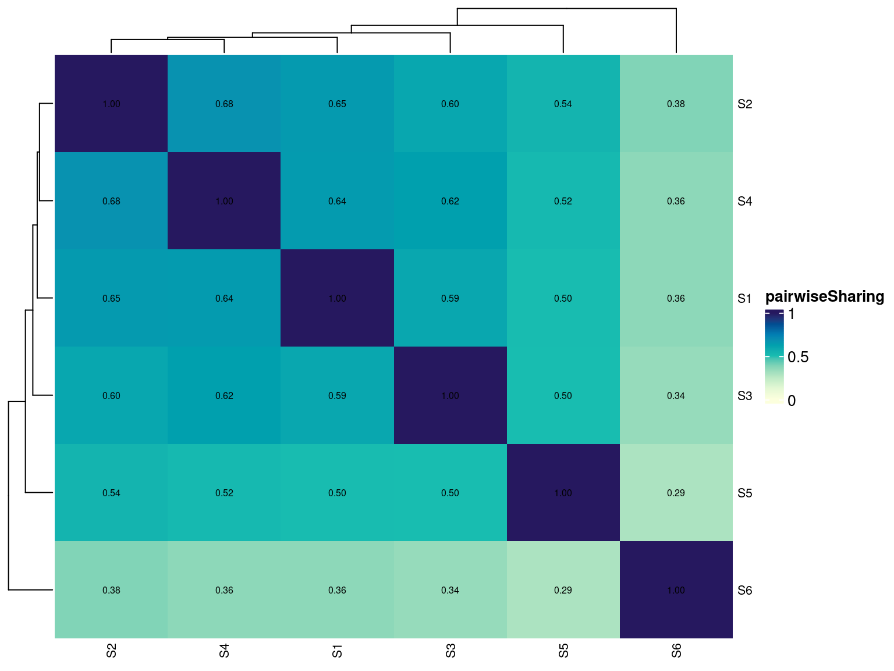
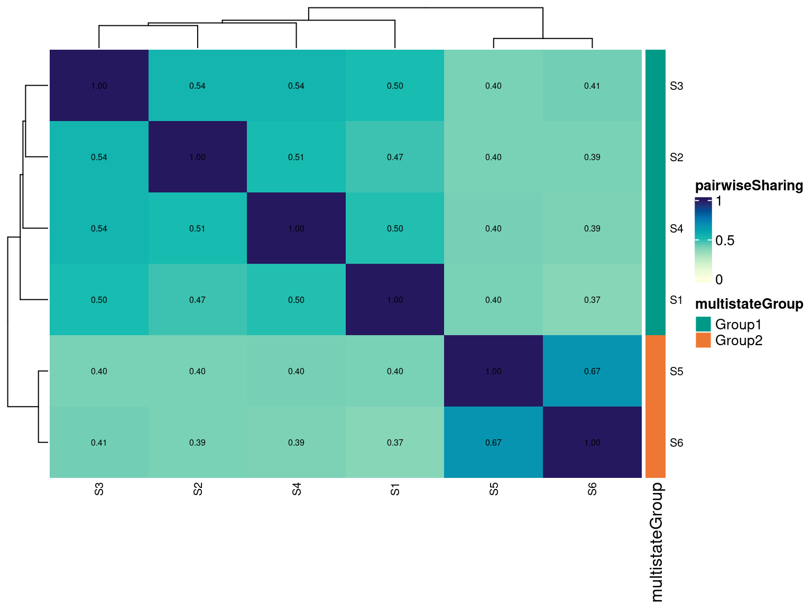
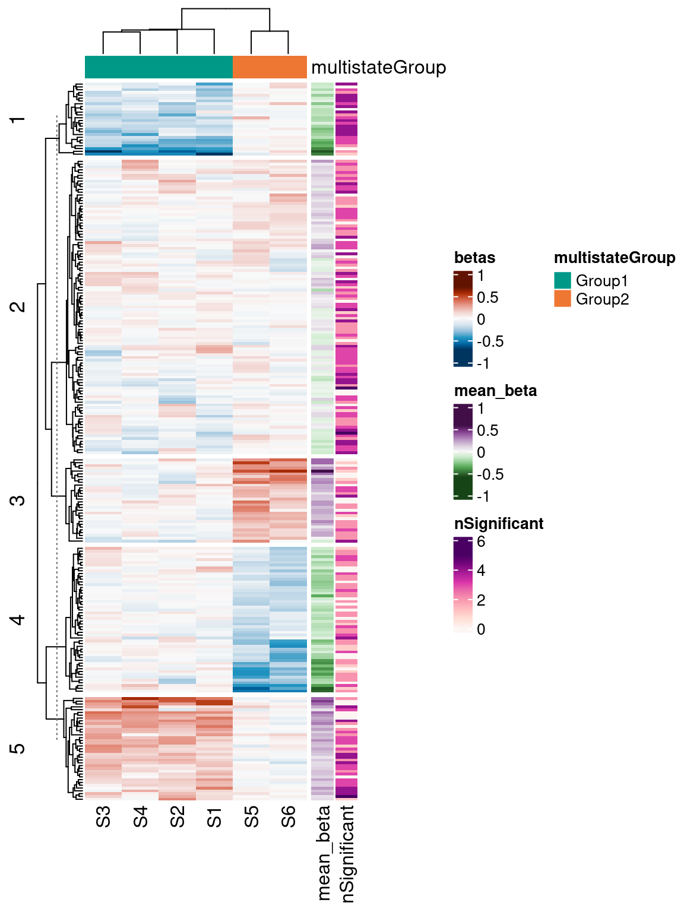

Last updated: 2022-11-10
Checks: 6 1
Knit directory: WEEO_2021_meta-eQTL/
This reproducible R Markdown analysis was created with workflowr (version 1.7.0). The Checks tab describes the reproducibility checks that were applied when the results were created. The Past versions tab lists the development history.
The R Markdown is untracked by Git. To know which version of the R
Markdown file created these results, you’ll want to first commit it to
the Git repo. If you’re still working on the analysis, you can ignore
this warning. When you’re finished, you can run
wflow_publish to commit the R Markdown file and build the
HTML.
Great job! The global environment was empty. Objects defined in the global environment can affect the analysis in your R Markdown file in unknown ways. For reproduciblity it’s best to always run the code in an empty environment.
The command set.seed(20190102) was run prior to running
the code in the R Markdown file. Setting a seed ensures that any results
that rely on randomness, e.g. subsampling or permutations, are
reproducible.
Great job! Recording the operating system, R version, and package versions is critical for reproducibility.
Nice! There were no cached chunks for this analysis, so you can be confident that you successfully produced the results during this run.
Great job! Using relative paths to the files within your workflowr project makes it easier to run your code on other machines.
Great! You are using Git for version control. Tracking code development and connecting the code version to the results is critical for reproducibility.
The results in this page were generated with repository version 8340521. See the Past versions tab to see a history of the changes made to the R Markdown and HTML files.
Note that you need to be careful to ensure that all relevant files for
the analysis have been committed to Git prior to generating the results
(you can use wflow_publish or
wflow_git_commit). workflowr only checks the R Markdown
file, but you know if there are other scripts or data files that it
depends on. Below is the status of the Git repository when the results
were generated:
Ignored files:
Ignored: .Rhistory
Ignored: .Rproj.user/
Ignored: Manuscript-Figures_files/
Ignored: data/Adipose_Subcutaneous.allpairs.txt.gz_alltests_chr1.txt
Ignored: data/Adipose_Subcutaneous.v8.signif_variant_gene_pairs.txt.gz_chr1.txt
Ignored: data/Adipose_Visceral_Omentum.v8.signif_variant_gene_pairs.txt.gz_chr1.txt
Ignored: data/Adrenal_Gland.v8.signif_variant_gene_pairs.txt.gz_chr1.txt
Ignored: data/Artery_Aorta.v8.signif_variant_gene_pairs.txt.gz_chr1.txt
Ignored: data/Artery_Coronary.v8.signif_variant_gene_pairs.txt.gz_chr1.txt
Ignored: data/Artery_Tibial.allpairs.txt.gz_alltests_chr1.txt
Ignored: data/Artery_Tibial.v8.signif_variant_gene_pairs.txt.gz_chr1.txt
Ignored: data/Brain_Amygdala.v8.signif_variant_gene_pairs.txt.gz_chr1.txt
Ignored: data/Brain_Anterior_cingulate_cortex_BA24.v8.signif_variant_gene_pairs.txt.gz_chr1.txt
Ignored: data/Brain_Caudate_basal_ganglia.v8.signif_variant_gene_pairs.txt.gz_chr1.txt
Ignored: data/Brain_Cerebellar_Hemisphere.v8.signif_variant_gene_pairs.txt.gz_chr1.txt
Ignored: data/Brain_Cerebellum.v8.signif_variant_gene_pairs.txt.gz_chr1.txt
Ignored: data/Brain_Cortex.v8.signif_variant_gene_pairs.txt.gz_chr1.txt
Ignored: data/Brain_Frontal_Cortex_BA9.v8.signif_variant_gene_pairs.txt.gz_chr1.txt
Ignored: data/Brain_Hippocampus.v8.signif_variant_gene_pairs.txt.gz_chr1.txt
Ignored: data/Brain_Hypothalamus.v8.signif_variant_gene_pairs.txt.gz_chr1.txt
Ignored: data/Brain_Nucleus_accumbens_basal_ganglia.v8.signif_variant_gene_pairs.txt.gz_chr1.txt
Ignored: data/Brain_Putamen_basal_ganglia.v8.signif_variant_gene_pairs.txt.gz_chr1.txt
Ignored: data/Brain_Spinal_cord_cervical_c-1.v8.signif_variant_gene_pairs.txt.gz_chr1.txt
Ignored: data/Brain_Substantia_nigra.v8.signif_variant_gene_pairs.txt.gz_chr1.txt
Ignored: data/Breast_Mammary_Tissue.v8.signif_variant_gene_pairs.txt.gz_chr1.txt
Ignored: data/Cells_Cultured_fibroblasts.v8.signif_variant_gene_pairs.txt.gz_chr1.txt
Ignored: data/Cells_EBV-transformed_lymphocytes.v8.signif_variant_gene_pairs.txt.gz_chr1.txt
Ignored: data/Colon_Sigmoid.v8.signif_variant_gene_pairs.txt.gz_chr1.txt
Ignored: data/Colon_Transverse.v8.signif_variant_gene_pairs.txt.gz_chr1.txt
Ignored: data/Esophagus_Gastroesophageal_Junction.v8.signif_variant_gene_pairs.txt.gz_chr1.txt
Ignored: data/Esophagus_Mucosa.allpairs.txt.gz_alltests_chr1.txt
Ignored: data/Esophagus_Mucosa.v8.signif_variant_gene_pairs.txt.gz_chr1.txt
Ignored: data/Esophagus_Muscularis.v8.signif_variant_gene_pairs.txt.gz_chr1.txt
Ignored: data/GTEx_Analysis_v8_eQTL_all_associations/
Ignored: data/Heart_Atrial_Appendage.v8.signif_variant_gene_pairs.txt.gz_chr1.txt
Ignored: data/Heart_Left_Ventricle.v8.signif_variant_gene_pairs.txt.gz_chr1.txt
Ignored: data/Kidney_Cortex.v8.signif_variant_gene_pairs.txt.gz_chr1.txt
Ignored: data/Liver.v8.signif_variant_gene_pairs.txt.gz_chr1.txt
Ignored: data/Lung.allpairs.txt.gz_alltests_chr1.txt
Ignored: data/Lung.v8.signif_variant_gene_pairs.txt.gz_chr1.txt
Ignored: data/Lung.v8.signif_variant_gene_pairs_chr1.txt
Ignored: data/Minor_Salivary_Gland.v8.signif_variant_gene_pairs.txt.gz_chr1.txt
Ignored: data/Muscle_Skeletal.allpairs.txt.gz_alltests_chr1.txt
Ignored: data/Muscle_Skeletal.v8.signif_variant_gene_pairs.txt.gz_chr1.txt
Ignored: data/Nerve_Tibial.allpairs.txt.gz_alltests_chr1.txt
Ignored: data/Nerve_Tibial.v8.signif_variant_gene_pairs.txt.gz_chr1.txt
Ignored: data/Ovary.v8.signif_variant_gene_pairs.txt.gz_chr1.txt
Ignored: data/Pancreas.v8.signif_variant_gene_pairs.txt.gz_chr1.txt
Ignored: data/Pituitary.v8.signif_variant_gene_pairs.txt.gz_chr1.txt
Ignored: data/Prostate.v8.signif_variant_gene_pairs.txt.gz_chr1.txt
Ignored: data/Skin_Not_Sun_Exposed_Suprapubic.allpairs.txt.gz_alltests_chr1.txt
Ignored: data/Skin_Not_Sun_Exposed_Suprapubic.v8.signif_variant_gene_pairs.txt.gz_chr1.txt
Ignored: data/Skin_Sun_Exposed_Lower_leg.allpairs.txt.gz_alltests_chr1.txt
Ignored: data/Skin_Sun_Exposed_Lower_leg.v8.signif_variant_gene_pairs.txt.gz_chr1.txt
Ignored: data/Small_Intestine_Terminal_Ileum.v8.signif_variant_gene_pairs.txt.gz_chr1.txt
Ignored: data/Spleen.v8.signif_variant_gene_pairs.txt.gz_chr1.txt
Ignored: data/Spleen.v8.signif_variant_gene_pairs_chr1.txt
Ignored: data/Stomach.v8.signif_variant_gene_pairs.txt.gz_chr1.txt
Ignored: data/Testis.v8.signif_variant_gene_pairs.txt.gz_chr1.txt
Ignored: data/Thyroid.allpairs.txt.gz_alltests_chr1.txt
Ignored: data/Thyroid.v8.signif_variant_gene_pairs.txt.gz_chr1.txt
Ignored: data/Thyroid.v8.signif_variant_gene_pairs_chr1.txt
Ignored: data/Uterus.v8.signif_variant_gene_pairs.txt.gz_chr1.txt
Ignored: data/Vagina.v8.signif_variant_gene_pairs.txt.gz_chr1.txt
Ignored: data/Whole_Blood.allpairs.txt.gz_alltests_chr1.txt
Ignored: data/Whole_Blood.v8.signif_variant_gene_pairs.txt.gz_chr1.txt
Ignored: data/Whole_Blood.v8.signif_variant_gene_pairs_chr1.txt
Ignored: output/00_Figures/
Ignored: output/01_simulations/
Ignored: output/gtex10_chr1_QTLE.rds
Ignored: output/gtex10_chr1_QTLE_filt.rds
Ignored: output/gtex_estimated_params.rds
Ignored: references/chr2.filtered.log
Ignored: references/chr2.filtered.vcf
Ignored: references/chr2.filtered2.log
Ignored: references/chr2.filtered2.vcf
Ignored: references/chr2.filtered3.log
Ignored: references/chr2.filtered3.vcf
Ignored: references/chr2.genes.gff3
Ignored: references/chr2.vcf.gz
Untracked files:
Untracked: .gitignore
Untracked: WEEO_2021_meta-eQTL.Rproj
Untracked: analysis/02_simulation-analysis.Rmd
Untracked: analysis/2021-08-03_pbmc8k-simulations.Rmd
Untracked: analysis/figure/
Untracked: code/preprocess_gtex.sh
Untracked: site_libs/
Untracked: workflow/
Unstaged changes:
Deleted: Snakefile
Modified: analysis/01_GTEx-analysis.Rmd
Modified: analysis/2021-07-30_pbmc8k-reference-processing.Rmd
Modified: analysis/index.Rmd
Staged changes:
New: analysis/01_GTEx-analysis.Rmd
Modified: analysis/index.Rmd
New: code/preprocess_gtex_alltests.sh
Deleted: code/sce_plots.R
Deleted: code/sim_celltypes.R
Deleted: code/sim_celltypes.Rmd
Deleted: envs/myenv.yaml
Deleted: resources/README.md
Note that any generated files, e.g. HTML, png, CSS, etc., are not included in this status report because it is ok for generated content to have uncommitted changes.
There are no past versions. Publish this analysis with
wflow_publish() to start tracking its development.
suppressPackageStartupMessages({
library(ggpubr)
library(dplyr)
library(ComplexHeatmap)
library(cowplot)
library(QTLExperiment)
devtools::load_all("/mnt/mcfiles/cazodi/Software/multiStateQTL")
})
set.seed(42)
rerun <- FALSE
plot_theme <- theme_cowplot(8)
save <- TRUE
save.loc <- paste0("output/00_Figures/", Sys.Date(), "_")
params <- readRDS("output/gtex_estimated_params.rds")
# Simulation parameters
n_tests <- 500
n_states <- 6
thresh <- 0.1
second_thresh <- 0.2
factor <- 0.75
sharing <- c(0, 1)Using the parameters estimated from the GTEx data, here we simulate a data set with 80% of QTL effects shared across all states and the remaining 20% of QTL effects unique to a single state.
sim_simple <- qtleSimulate(params=params, ntests=n_tests, nstates=n_states,
global=0.8, unique=0.2)
sim_simple <- callSignificance(sim_simple, assay="lfsrs",
thresh=thresh, second.thresh = second_thresh)
sim_simple <- runPairwiseSharing(sim_simple, assay="significant", factor=factor)
p_simple <- plotPairwiseSharing(sim_simple, col_range=sharing,
cell_annotate = TRUE)
draw(p_simple)
if(save){
tmp <- paste0(save.loc, "sim_simple_pairwise.pdf")
message("Saving to: ", tmp)
pdf(tmp, height=5, width=5.5)
draw(p_simple)
while (!is.null(dev.list())) dev.off()
}Simulating a data set again with 80% of QTL effects shared across all states and the remaining 20% of QTL effects unique to a single state. However, in this simulation, the betas for each state are sampled using state-specific standard deviations. This situation could occur if you have less data available for some states and therefore expect more variance in the estimated QTL effect sizes. Here we simulate S1-S4 with sd=0.1 (default), S5 with sd=1, and S6 with sd=2.
sim_sd <- qtleSimulate(params=params, ntests=n_tests, nstates=n_states,
global=0.8, unique=0.2,
beta_sd=c(0.1, 0.1, 0.1, 0.1, 1, 2))
sim_sd <- callSignificance(sim_sd, assay="lfsrs",
thresh=thresh, second.thresh = second_thresh)
sim_sd <- runPairwiseSharing(sim_sd, assay="significant", factor=factor)
p_sd <- plotPairwiseSharing(sim_sd, col_range=sharing,
cell_annotate = TRUE)
draw(p_sd)
if(save){
tmp <- paste0(save.loc, "sim_sd_pairwise.pdf")
message("Saving to: ", tmp)
pdf(tmp, height=5, width=5.5)
draw(p_sd)
while (!is.null(dev.list())) dev.off()
}Simulating a dataset where states are clustered in groups, with 50% of QTL assigned randomly to only one cluster and 50% shared across all states. Here we simulate two clusters, but k can be set to any number smaller than the number of states.
sim_multi <- qtleSimulate(params=params, ntests=n_tests, nstates=n_states,
global=0.5, multi=0.5, k=c(1, 1, 1, 1, 2, 2))
sim_multi <- callSignificance(sim_multi, assay="lfsrs",
thresh=thresh, second.thresh = second_thresh)
sim_multi <- runPairwiseSharing(sim_multi, assay="significant", factor=factor)
p_multi1 <- plotPairwiseSharing(sim_multi, col_range=sharing,
cell_annotate = TRUE,
annotate_rows = "multistateGroup")
draw(p_multi1)
if(save){
tmp <- paste0(save.loc, "sim_multistate_pairwise.pdf")
message("Saving to: ", tmp)
pdf(tmp, height=5, width=5.5)
draw(p_multi1)
while (!is.null(dev.list())) dev.off()
}To get more detailed insight into the patterns of QTL sharing across states, we can also visualize sharing with UpSet plots.
p_upset <- plotUpSet(sim_multi, annotate_by = c("multistateGroup", "nSignificant"),
set_order = NULL)
draw(p_upset)Upset plot of significant QTL tests for the multi-state simulation.
if(save){
tmp <- paste0(save.loc, "multistate_upset.pdf")
message("Saving to: ", tmp)
pdf(tmp, height=5, width=6)
draw(p_upset)
while (!is.null(dev.list())) dev.off()
}The runTestMetrics function outputs helpful information
about each QTL test, including the number of states where the test was
significant, the standard deviation of the betas across states, and the
classification of that QTL. Here we compare the simulate QTL types
(columns: global, multistate, unique) to the QTL classifications based
on our analysis pipeline (rows: global, multistate, unique, not
significant).
sim_multi <- runTestMetrics(sim_multi)
sim_stats <- table(rowData(sim_multi)$qtl_type_simple,
rowData(sim_multi)$QTL)
sim_stats[c("global", "multistate", "unique"), ]
global multistate
global 45 0
multistate 181 189
unique 1 19The plotQTLClusters function automates plotting a
heatmap of betas or any other user defined assay for tests and states.
Here we show simulated betas from the multi-state simulation and
annotate the plot with helpful information from the colData and
rowData.
rowData(sim_multi)$mean_beta_abs <- abs(rowData(sim_multi)$mean_beta)
sim_multi_subset <- subset(sim_multi, QTL == "multistate")
p_ms_clusters <- plotQTLClusters(sim_multi_subset,
row_km = 5,
annotate_states = c("multistateGroup"),
annotate_tests = c("mean_beta", "nSignificant"))
draw(p_ms_clusters)
if(save){
tmp <- paste0(save.loc, "multistate_clusters.pdf")
message("Saving to: ", tmp)
pdf(tmp, height=7, width=6)
draw(p_ms_clusters)
while (!is.null(dev.list())) dev.off()
}
devtools::session_info()─ Session info ───────────────────────────────────────────────────────────────
setting value
version R version 4.2.1 (2022-06-23)
os Rocky Linux 8.6 (Green Obsidian)
system x86_64, linux-gnu
ui X11
language (EN)
collate en_AU.UTF-8
ctype en_AU.UTF-8
tz Australia/Melbourne
date 2022-11-10
pandoc 2.19.2 @ /usr/lib/rstudio-server/bin/quarto/bin/tools/ (via rmarkdown)
─ Packages ───────────────────────────────────────────────────────────────────
! package * version date (UTC) lib source
abind 1.4-5 2016-07-21 [1] CRAN (R 4.2.1)
ashr 2.2-54 2022-02-22 [1] CRAN (R 4.2.1)
assertthat 0.2.1 2019-03-21 [1] CRAN (R 4.2.1)
backports 1.4.1 2021-12-13 [1] CRAN (R 4.2.1)
Biobase * 2.56.0 2022-04-26 [1] Bioconductor
BiocGenerics * 0.42.0 2022-04-26 [1] Bioconductor
bit 4.0.4 2020-08-04 [1] CRAN (R 4.2.1)
bit64 4.0.5 2020-08-30 [1] CRAN (R 4.2.1)
bitops 1.0-7 2021-04-24 [1] CRAN (R 4.2.1)
brio 1.1.3 2021-11-30 [1] CRAN (R 4.2.1)
broom 1.0.0 2022-07-01 [1] CRAN (R 4.2.1)
bslib 0.4.0 2022-07-16 [1] CRAN (R 4.2.1)
cachem 1.0.6 2021-08-19 [1] CRAN (R 4.2.1)
Cairo 1.6-0 2022-07-05 [1] CRAN (R 4.2.1)
callr 3.7.1 2022-07-13 [1] CRAN (R 4.2.1)
car 3.1-0 2022-06-15 [1] CRAN (R 4.2.1)
carData 3.0-5 2022-01-06 [1] CRAN (R 4.2.1)
checkmate 2.1.0 2022-04-21 [1] CRAN (R 4.2.1)
circlize 0.4.15 2022-05-10 [1] CRAN (R 4.2.1)
cli 3.4.0 2022-09-08 [1] CRAN (R 4.2.1)
clue 0.3-61 2022-05-30 [1] CRAN (R 4.2.1)
cluster 2.1.3 2022-03-28 [2] CRAN (R 4.2.1)
codetools 0.2-18 2020-11-04 [2] CRAN (R 4.2.1)
collapse * 1.8.8 2022-08-15 [1] CRAN (R 4.2.1)
colorspace 2.0-3 2022-02-21 [1] CRAN (R 4.2.1)
ComplexHeatmap * 2.12.1 2022-08-09 [1] Bioconductor
cowplot * 1.1.1 2020-12-30 [1] CRAN (R 4.2.1)
crayon 1.5.2 2022-09-29 [1] CRAN (R 4.2.1)
data.table * 1.14.4 2022-10-17 [1] CRAN (R 4.2.1)
DBI 1.1.3 2022-06-18 [1] CRAN (R 4.2.1)
DelayedArray 0.22.0 2022-04-26 [1] Bioconductor
desc 1.4.1 2022-03-06 [1] CRAN (R 4.2.1)
devtools 2.4.4 2022-07-20 [1] CRAN (R 4.2.1)
digest 0.6.30 2022-10-18 [1] CRAN (R 4.2.1)
doParallel 1.0.17 2022-02-07 [1] CRAN (R 4.2.1)
dplyr * 1.0.10 2022-09-01 [1] CRAN (R 4.2.1)
ellipsis 0.3.2 2021-04-29 [1] CRAN (R 4.2.1)
evaluate 0.16 2022-08-09 [1] CRAN (R 4.2.1)
fansi 1.0.3 2022-03-24 [1] CRAN (R 4.2.1)
fastmap 1.1.0 2021-01-25 [1] CRAN (R 4.2.1)
fitdistrplus 1.1-8 2022-03-10 [1] CRAN (R 4.2.1)
foreach 1.5.2 2022-02-02 [1] CRAN (R 4.2.1)
fs 1.5.2 2021-12-08 [1] CRAN (R 4.2.1)
generics 0.1.3 2022-07-05 [1] CRAN (R 4.2.1)
GenomeInfoDb * 1.32.4 2022-09-06 [1] Bioconductor
GenomeInfoDbData 1.2.8 2022-08-04 [1] Bioconductor
GenomicRanges * 1.48.0 2022-04-26 [1] Bioconductor
GetoptLong 1.0.5 2020-12-15 [1] CRAN (R 4.2.1)
ggplot2 * 3.3.6 2022-05-03 [1] CRAN (R 4.2.1)
ggpubr * 0.4.0 2020-06-27 [1] CRAN (R 4.2.1)
ggsignif 0.6.3 2021-09-09 [1] CRAN (R 4.2.1)
git2r 0.30.1 2022-03-16 [1] CRAN (R 4.2.1)
GlobalOptions 0.1.2 2020-06-10 [1] CRAN (R 4.2.1)
glue 1.6.2 2022-02-24 [1] CRAN (R 4.2.1)
gridExtra 2.3 2017-09-09 [1] CRAN (R 4.2.1)
gtable 0.3.1 2022-09-01 [1] CRAN (R 4.2.1)
highr 0.9 2021-04-16 [1] CRAN (R 4.2.1)
htmltools 0.5.3 2022-07-18 [1] CRAN (R 4.2.1)
htmlwidgets 1.5.4 2021-09-08 [1] CRAN (R 4.2.1)
httpuv 1.6.5 2022-01-05 [1] CRAN (R 4.2.1)
invgamma 1.1 2017-05-07 [1] CRAN (R 4.2.1)
IRanges * 2.30.1 2022-08-18 [1] Bioconductor
irlba 2.3.5.1 2022-10-03 [1] CRAN (R 4.2.1)
iterators 1.0.14 2022-02-05 [1] CRAN (R 4.2.1)
jquerylib 0.1.4 2021-04-26 [1] CRAN (R 4.2.1)
jsonlite 1.8.3 2022-10-21 [1] CRAN (R 4.2.1)
knitr 1.39 2022-04-26 [1] CRAN (R 4.2.1)
later 1.3.0 2021-08-18 [1] CRAN (R 4.2.1)
lattice 0.20-45 2021-09-22 [2] CRAN (R 4.2.1)
lifecycle 1.0.2 2022-09-09 [1] CRAN (R 4.2.1)
magick 2.7.3 2021-08-18 [1] CRAN (R 4.2.1)
magrittr 2.0.3 2022-03-30 [1] CRAN (R 4.2.1)
mashr 0.2.57 2022-01-25 [1] CRAN (R 4.2.1)
MASS 7.3-57 2022-04-22 [2] CRAN (R 4.2.1)
Matrix 1.4-1 2022-03-23 [2] CRAN (R 4.2.1)
MatrixGenerics * 1.8.1 2022-06-26 [1] Bioconductor
matrixStats * 0.62.0 2022-04-19 [1] CRAN (R 4.2.1)
memoise 2.0.1 2021-11-26 [1] CRAN (R 4.2.1)
mime 0.12 2021-09-28 [1] CRAN (R 4.2.1)
miniUI 0.1.1.1 2018-05-18 [1] CRAN (R 4.2.1)
mixsqp 0.3-47 2022-10-31 [1] Github (stephenslab/mixsqp@0a80f7e)
R multiStateQTL * 0.1.0 <NA> [?] <NA>
munsell 0.5.0 2018-06-12 [1] CRAN (R 4.2.1)
mvtnorm 1.1-3 2021-10-08 [1] CRAN (R 4.2.1)
pillar 1.8.1 2022-08-19 [1] CRAN (R 4.2.1)
pkgbuild 1.3.1 2021-12-20 [1] CRAN (R 4.2.1)
pkgconfig 2.0.3 2019-09-22 [1] CRAN (R 4.2.1)
pkgload 1.3.0 2022-06-27 [1] CRAN (R 4.2.1)
plyr 1.8.7 2022-03-24 [1] CRAN (R 4.2.1)
png 0.1-7 2013-12-03 [1] CRAN (R 4.2.1)
prettyunits 1.1.1 2020-01-24 [1] CRAN (R 4.2.1)
processx 3.7.0 2022-07-07 [1] CRAN (R 4.2.1)
profvis 0.3.7 2020-11-02 [1] CRAN (R 4.2.1)
promises 1.2.0.1 2021-02-11 [1] CRAN (R 4.2.1)
ps 1.7.1 2022-06-18 [1] CRAN (R 4.2.1)
purrr 0.3.5 2022-10-06 [1] CRAN (R 4.2.1)
QTLExperiment * 0.1.0 2022-11-09 [1] git2r (https://gitlab.svi.edu.au/biocellgen-public/qtlexperiment.git@42ab7e2)
R6 2.5.1 2021-08-19 [1] CRAN (R 4.2.1)
RColorBrewer 1.1-3 2022-04-03 [1] CRAN (R 4.2.1)
Rcpp 1.0.9 2022-07-08 [1] CRAN (R 4.2.1)
RCurl 1.98-1.9 2022-10-03 [1] CRAN (R 4.2.1)
remotes 2.4.2 2021-11-30 [1] CRAN (R 4.2.1)
rjson 0.2.21 2022-01-09 [1] CRAN (R 4.2.1)
rlang 1.0.5 2022-08-31 [1] CRAN (R 4.2.1)
rmarkdown 2.15 2022-08-16 [1] CRAN (R 4.2.1)
rmeta 3.0 2018-03-20 [1] CRAN (R 4.2.1)
rprojroot 2.0.3 2022-04-02 [1] CRAN (R 4.2.1)
rstatix 0.7.0 2021-02-13 [1] CRAN (R 4.2.1)
rstudioapi 0.14 2022-08-22 [1] CRAN (R 4.2.1)
S4Vectors * 0.34.0 2022-04-26 [1] Bioconductor
sass 0.4.2 2022-07-16 [1] CRAN (R 4.2.1)
scales 1.2.1 2022-08-20 [1] CRAN (R 4.2.1)
sessioninfo 1.2.2 2021-12-06 [1] CRAN (R 4.2.1)
shape 1.4.6 2021-05-19 [1] CRAN (R 4.2.1)
shiny 1.7.2 2022-07-19 [1] CRAN (R 4.2.1)
softImpute 1.4-1 2021-05-09 [1] CRAN (R 4.2.1)
SQUAREM 2021.1 2021-01-13 [1] CRAN (R 4.2.1)
stringi 1.7.8 2022-07-11 [1] CRAN (R 4.2.1)
stringr 1.4.1 2022-08-20 [1] CRAN (R 4.2.1)
SummarizedExperiment * 1.26.1 2022-04-29 [1] Bioconductor
survival 3.3-1 2022-03-03 [2] CRAN (R 4.2.1)
testthat * 3.1.4 2022-04-26 [1] CRAN (R 4.2.1)
tibble 3.1.8 2022-07-22 [1] CRAN (R 4.2.1)
tidyr 1.2.1 2022-09-08 [1] CRAN (R 4.2.1)
tidyselect 1.2.0 2022-10-10 [1] CRAN (R 4.2.1)
truncnorm 1.0-8 2018-02-27 [1] CRAN (R 4.2.1)
tzdb 0.3.0 2022-03-28 [1] CRAN (R 4.2.1)
urlchecker 1.0.1 2021-11-30 [1] CRAN (R 4.2.1)
usethis 2.1.6 2022-05-25 [1] CRAN (R 4.2.1)
utf8 1.2.2 2021-07-24 [1] CRAN (R 4.2.1)
vctrs 0.4.1 2022-04-13 [1] CRAN (R 4.2.1)
viridis 0.6.2 2021-10-13 [1] CRAN (R 4.2.1)
viridisLite 0.4.1 2022-08-22 [1] CRAN (R 4.2.1)
vroom 1.6.0 2022-09-30 [1] CRAN (R 4.2.1)
withr 2.5.0 2022-03-03 [1] CRAN (R 4.2.1)
workflowr 1.7.0 2021-12-21 [1] CRAN (R 4.2.1)
xfun 0.32 2022-08-10 [1] CRAN (R 4.2.1)
xtable 1.8-4 2019-04-21 [1] CRAN (R 4.2.1)
XVector 0.36.0 2022-04-26 [1] Bioconductor
yaml 2.3.6 2022-10-18 [1] CRAN (R 4.2.1)
zlibbioc 1.42.0 2022-04-26 [1] Bioconductor
[1] /mnt/mcfiles/cazodi/R/x86_64-pc-linux-gnu-library/4.2
[2] /opt/R/4.2.1/lib/R/library
R ── Package was removed from disk.
──────────────────────────────────────────────────────────────────────────────